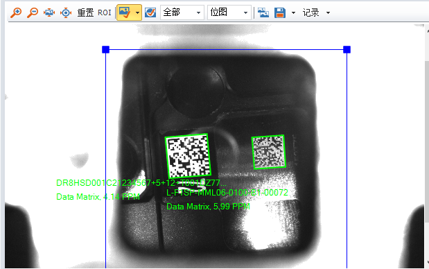
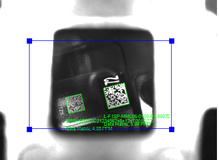
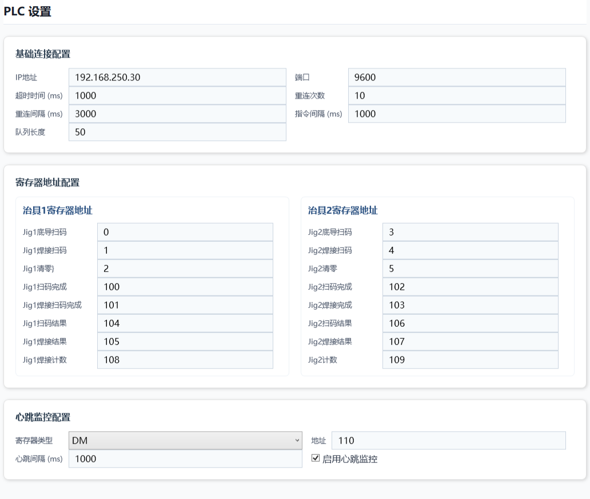

0. 先看这页：三个不能弄错的事实
本手册按“新操作员可独立上手”的方式编写。第一次操作前，请先由已授权人员完成现场培训，并逐项确认下面三点。
1. 十分钟快速上手
1.1 新手第一次开机
- 先看现场安全状态：防护门、急停、气源、电源、治具及机器人工作区均符合现场规程；人员和工具离开危险区域。
- 确认生产条件：当班工单、料号、产品流向、首件要求明确；待加工品、不良品、已加工品容器已区分并标识。
- 登录软件：使用本人获授权的用户名。注意：输入系统未知用户名可能被自动注册，因此不得试输、共用或编造账号。
- 完成初始化：观察 PLC、扫码器、机器人、MES/SFC 等项目状态。失败时先检查连接再点“重试”；未经班组长或维护人员同意不要“跳过”。
- 进入“设置”核对关键配置：重点确认当前工单要求、设备连接和 SFC 开关。量产时 SFC 必须开启。
- 回到“开始”页：点击“刷新状态”，确认关键设备在线、没有未处置异常。
- 按现场首件制度上料：点击“启动设备”，观察第一件的扫码、焊接及 OK/NG 走向，核对实物、界面状态和现场信号一致。
- 首件确认后量产：操作员持续巡视，不因软件显示“运行”而离岗。
1.2 牢记四句话
2. 安全、质量与账号权限
2.1 人员职责
操作员
班前确认、启动与停止、运行巡视、首件核对、异常上报、产品隔离、交接记录。不得改 PLC 地址或绕过质量校验。
班组长 / 质量
审核首件、判定异常品处置、批准特殊生产、确认 SFC/MES 旁路期间的隔离与追溯方案。
设备 / 软件维护
备份后修改配置，核对 PLC 点位、通讯和日志，验证修复结果并记录变更。未经授权不改生产数据。
2.2 必须实体急停的情况
- 有人进入危险区域，或有夹伤、碰撞风险；
- 机器人、治具或运动机构失控、运动方向异常；
- 冒烟、异味、异常火花、气路/电气异常；
- 防护门或安全装置失效；
- 软件“停止设备”后危险运动仍未停止。
2.3 账号红线
- 一人一号，不借用、不共用，不使用“admin/test/123”等试探性用户名。
- 离岗时切换用户或按现场规定退出，避免他人以本人身份操作。
- 发现陌生账号立即停止使用并报管理员核查。
- 账号、权限、密码规则及停用流程：由使用单位填写并发布。
3. 登录与系统初始化
3.1 登录
- 核对当前设备和班次，进入登录界面。
- 输入本人被授权的用户名及所需凭据。
- 确认显示的当前用户确实是本人；不一致时使用“切换用户”。
- 若账号不存在、权限不清或出现陌生账号，不要反复尝试，联系使用单位管理员。
3.2 初始化结果怎么处理
| 现象 | 操作员应做什么 | 不能怎么做 |
|---|---|---|
| 全部成功 | 记录或目视确认，继续班前检查。 | 不能跳过首件核对。 |
| 某项失败，可重试 | 检查电源、网线、气源、设备状态和配置选择；确认后点“重试”。 | 不要连续盲点重试掩盖故障。 |
| 仍失败，需要跳过 | 停止量产准备，联系班组长/维护人员评估。获授权后才可跳过，并记录项目、原因、时间、批准人及补偿措施。 | 不能把“跳过”当作模拟运行或正常在线。 |
| 界面卡住或状态不确定 | 保存现场信息，按故障卡收集资料并报修。 | 不要反复强关、重启后直接生产。 |
跳过的真实含义：只是不再阻塞本次初始化流程；它不会把真实硬件替换成模拟设备，也不能证明后续流程安全可用。跳过任何关键设备后，原则上不得正常量产，除非已有经批准的降级作业指导书。
4. 软件界面与按钮说明
4.1 主导航
| 导航 | 用途 | 操作提醒 |
|---|---|---|
| 开始 | 查看运行状态、启动/停止设备、刷新状态、查看或清空当前日志显示。 | 量产主要页面；状态刷新不能替代现场巡视。 |
| 设置 | 维护设备连接、业务开关等配置（具体项目以现场版本为准）。 | 只允许授权人员修改；改前备份，改后验证并记录。 |
| 数据管理 | 查看软件提供的数据功能。 | 先确认筛选条件；不要把界面查询结果等同于完整 MES 追溯。 |
| 切换用户 | 交班或换人时更换当前账号。 | 交接后立即切换，禁止沿用前一人的登录身份。 |
4.2 “开始”页四个操作
启动设备
在班前检查、初始化、首件条件满足后启动自动流程。点击后要观察设备是否按预期进入运行。
停止设备
请求软件停止运行流程。点击后必须现场确认运动和流程状态；它不是实体急停。
刷新状态
重新获取/显示当前状态。用于状态可能滞后时复核，但不能修复通讯故障。
清空日志
只用于清理当前界面可见日志。异常未取证前不要点；清空界面不应被当作删除磁盘 logs 文件。
5. 班前检查清单
建议打印本节，每班由操作员逐项勾选。任何关键项不满足，先上报，不能“带病开机”。
人员与现场
- 本人已培训并获授权，劳保用品符合要求。
- 危险区域无人、无工具和散落物。
- 防护门、实体急停及安全装置外观正常。
- OK、NG、待检、隔离品容器清晰标识。
设备与物料
- 电源、气源、网线及设备状态正常。
- 治具清洁、定位可靠，无残件或异物。
- 扫码器镜头清洁，安装位置未松动。
- 料号、工单、产品版本、首件要求一致。
软件与通讯
- 当前用户正确，无陌生登录账号。
- 初始化项目均成功；若有跳过，已有书面授权。
- PLC、机器人、扫码器状态与现场一致。
- SFC 已开启，MES 可用并完成测试校验。
质量与追溯
- 前一班异常、尾件和在制品已交接清楚。
- 首件样本、判定标准和隔离区域就绪。
- 系统时间正确，磁盘空间满足日志保存。
- 班前点检表已填写，异常项已闭环。
6. 标准生产操作
6.1 启动
- 完成第 5 章班前检查，确认上一班没有未结异常。
- 在“开始”页点击“刷新状态”，把界面状态与 PLC、机器人、扫码器和现场指示进行对照。
- 再次确认 SFC 开启。若关闭，停止启动流程并通知班组长/质量。
- 按作业指导书正确放料，手和工具退出危险区，关闭防护设施。
- 点击“启动设备”。观察第一循环动作、扫码校验、焊接结果及产品流向。
- 首件确认合格并记录后，才进入连续生产。
6.2 运行中看什么
| 观察对象 | 正常关注点 | 异常信号 |
|---|---|---|
| 界面状态 / 日志 | 状态稳定更新，流程顺序合理，无连续报错。 | 长时间无刷新、重复同一错误、状态与现场不一致。 |
| 扫码 | 条码清晰，产品与扫码值对应，OK/NG 逻辑正确。 | 空码、错码、重复码、读到邻近产品、连续 NG。 |
| 焊接 | 设备动作与工艺要求一致，结果判定稳定。 | 虚焊、偏焊、外观异常、连续 NG、结果地址疑似串位。 |
| 产品流向 | OK/NG/待检分区明确，数量可对账。 | 混料、漏件、数量突变、现场结果与计数不一致。 |
| 通讯 | PLC/机器人/扫码器/MES 连接稳定。 | 超时、掉线、重连频繁、心跳异常。 |
6.3 正常停止
- 停止继续上料，等待当前产品到达可安全停机位置；若已出现安全风险则直接按现场急停规程。
- 点击“停止设备”，现场观察设备是否停止自动循环。
- 清点在制品，标明其状态；不能判断的全部放入待检/隔离区。
- 记录末件、数量、异常和停止原因，再进行清洁或交班。
7. 扫码、焊接、清零与机器人流程
7.1 总体理解
这是便于操作员理解的逻辑示意，不替代 PLC 程序或电气图纸。现场顺序必须以验证后的程序、配置和作业指导书为准。
7.2 扫码流程
- PLC 发出相应触发信号，上位机调用对应工位扫码器。
- 扫码器读取条码，上位机判断是否读到有效内容，并按当前业务规则校验。
- SFC 开启时，应走 MES/SFC 校验；SFC 关闭时会跳过 MES 并按通过，这是高风险旁路。
- 上位机将完成状态和扫码结果写回 PLC，PLC 决定后续动作。
- 操作员核对实物与结果流向；连续读码失败应先停机清洁镜头、检查位置和条码质量，不能反复放行。
7.3 焊接结果
焊接结果由约定的 PLC 地址交互。上位机、PLC 图片对 D104/D105 和 D106/D107 的标注冲突会造成“焊接与扫码结果串位”的严重风险。上线验证至少要分别制造一组可控的扫码 OK/NG、焊接 OK/NG 组合，逐点监视地址变化，确认四个结果字的真实含义。
7.4 清零
当前运行页没有手动“清零”按钮。需要计数清零时，只能按经批准的 PLC/HMI 或维护流程执行。清零前必须：
- 记录当前 D108、D109 及现场实物数量；
- 确认在制品已清点并隔离，完成交班或工单结算；
- 取得有权限人员批准，说明清零原因；
- 清零后用小批量测试核对新计数，不得用改寄存器方式掩盖数量差异。
7.5 机器人交互
当前机器人交互只承担“发起/参与扫码校验并接收 OK 或 NG”的有限职责。机器人不负责 MES 报站，也不形成扫码历史记录。排查机器人扫码问题时，要同时查看机器人请求、扫码器读取、上位机判定和 PLC 结果，不能只看机器人最终收到的 OK/NG。


8. 异常隔离与恢复生产
8.1 通用“四步法”
消除人员风险2 隔离产品
锁定影响范围3 保存证据
时间/画面/日志4 授权恢复
验证首件
- 安全停机：一般流程异常用“停止设备”；存在人身或失控风险立即实体急停。
- 隔离产品：从最后一件确认合格品之后开始，所有已加工、在制、待加工但可能受影响的产品分别标识，禁止混回正常品。
- 保存证据：不要先点“清空日志”。记录精确到分钟的时间、工位、条码、数量、当前用户、错误原文和现场状态；截图并复制 logs。
- 恢复验证：故障原因已明确、措施完成、设备安全、通讯正常、SFC 开启；由规定人员批准，重新做首件并记录。
8.2 影响范围怎么圈定
| 异常 | 先做什么 | 产品处理 | 恢复条件 |
|---|---|---|---|
| SFC 被关闭 / MES 跳过 | 立即停止正常量产，通知班组长和质量。 | 隔离旁路期间全部产品，建立人工条码与结果清单。 | SFC 开启、MES 验证成功、数据补偿方案获批、首件通过。 |
| 扫码器连续 NG / 空码 | 停止上料，清洁镜头，检查条码和安装。 | 隔离最后一次确认正常扫码之后的产品。 | 多件不同条码连续读取正确，无串码。 |
| 焊接与扫码结果疑似串位 | 停止设备，禁止修改地址试错。 | 扩大隔离至地址变更/最后确认点之后产品。 | PLC 与上位机逐点联调、四地址签字确认、首件通过。 |
| 软件状态与现场不一致 | 停止设备，必要时急停；记录双方状态。 | 在制品全部待检。 | 通讯与状态同步验证完成。 |
| 软件卡死 / 闪退 | 先确保设备处于安全状态，再截屏、收日志。 | 隔离异常时在制品，核对最后记录。 | 重启后初始化全通过，状态一致，首件通过。 |
| 数量对不上 | 停止清零和继续生产，盘点实物与 D108/D109。 | 相关批次暂缓流转。 | 差异原因与产品去向明确，质量批准。 |
9. 停机、换班与交接
9.1 正常停机
- 停止上料，让当前循环到安全节点。
- 点击“停止设备”，现场确认自动动作停止。
- 清理、清点并标识治具内和设备内所有在制品。
- 记录 OK、NG、待检、在制数量及软件/现场计数。
- 保存异常信息；确认无需取证后才可清空界面日志。
- 按设备规程关闭外围设备、电源或气源；本手册不替代电气停机/上锁挂牌程序。
9.2 交接班最少信息
- 日期、班次、交班人、接班人、当前登录用户。
- 工单/料号、首件状态、OK/NG/待检/在制数量。
- SFC 是否全程开启；如曾关闭，起止时间和产品隔离范围。
- 当班异常、临时措施、未完成维修和禁止操作事项。
- 配置是否变更、变更人、备份位置、验证结果。
- 最后一件确认合格品标识或条码。
接班人必须现场核对后签字；“口头说没问题”不能替代交接记录。
10. 数据、配置与日志位置
10.1 文件位置
| 内容 | 默认位置 | 用途与注意 |
|---|---|---|
| 配置 | 程序目录\Config | 保存软件配置。修改前复制备份；不要在软件运行中随意编辑。 |
| 日志 | 程序目录\logs | 用于故障定位和追溯。报修时复制相关时间段，保留原文件。 |
“程序目录”怎么找：指实际运行程序所在文件夹，不一定是本手册所在目录。可由维护人员通过快捷方式“打开文件所在位置”或部署记录确认。不要凭相似文件夹名猜测。
10.2 日志取证规范
- 记录异常发生时间（精确到分钟）、工位、条码和操作动作。
- 在界面清空日志前截图，保持错误原文完整。
- 退出或按维护规程复制
logs中覆盖异常前后至少一段时间的文件。 - 把配置备份、软件版本、PLC/机器人状态照片与日志放入同一报修资料包。
- 复制而不是剪切；不要为了“清空间”删除唯一日志。保留期限由使用单位填写。
11. 设置与维护变更
设置页及 Config 文件属于受控区域。操作员只负责核对，不应自行修改通讯地址、端口、SFC 开关、PLC 点位或工艺相关配置。
11.1 标准变更流程
- 提出：写明问题、目标、影响设备和预计风险。
- 备份：复制整个 Config 文件夹，名称包含日期时间和变更人。
- 批准：由使用单位规定的设备/软件/质量负责人批准。
- 修改：一次只改必要项，记录旧值、新值和原因。
- 验证：空运行或安全测试后，覆盖扫码 OK/NG、焊接 OK/NG、通讯中断恢复、SFC/MES、计数和两工位。
- 首件：恢复量产前重新做首件，确认实物、软件、PLC、MES 一致。
- 归档：保存变更单、备份、日志、测试结果和签字；失败时使用已验证备份回退。
11.2 禁止事项
- 不备份直接改 Config；
- 为了“先跑起来”关闭 SFC；
- 依据未核对的 PLC 图片交换 D104～D107；
- 在量产中直接改 PLC 寄存器、清零或反复重启；
- 使用未知用户名试探权限；
- 异常未取证先清空日志。
12. PLC 交互地址附录
| 地址 | 程序默认含义 | 投产核对要求 |
|---|---|---|
| D0～D5 | PLC → 上位机：触发区（6 个触发地址） | 逐个触发，记录工位、业务动作、置位/复位规则和防重复机制。 |
| D100～D103 | 上位机 → PLC：完成状态区（4 个完成地址） | 分别验证对应请求、写入时机、保持时间及 PLC 确认后的清除逻辑。 |
| D104 | 一工位焊接结果 | 高风险冲突 根目录 PNG 将同工位“焊接/扫码”顺序标成相反。需制造可区分的 OK/NG 组合，在线监控四地址并由 PLC、上位机、质量三方确认。 |
| D105 | 一工位扫码结果 | |
| D106 | 二工位焊接结果 | |
| D107 | 二工位扫码结果 | |
| D108、D109 | 计数 | 核对各自对应对象、加一条件、掉电保持和清零规则；与实物盘点一致。 |
| D110 | 心跳 | 核对方向、周期、超时阈值及断线后的安全处理。 |

12.1 推荐逐点验证记录
| 测试项 | 预期地址/值 | PLC 实测 | 上位机实测 | 产品流向 | 确认人/日期 |
|---|---|---|---|---|---|
| 一工位扫码 OK / NG | |||||
| 一工位焊接 OK / NG | |||||
| 二工位扫码 OK / NG | |||||
| 二工位焊接 OK / NG | |||||
| 计数与清零 | |||||
| 心跳中断与恢复 |
13. 现场故障处理卡
卡 A：点“启动”后不运行
- 确认没有人员危险；不要连续点击。
- 刷新状态，核对初始化、PLC/机器人/扫码器连接。
- 确认实体安全条件、防护和设备状态。
- 检查是否有未处置异常及 SFC/MES 问题。
- 仍不运行：截图、记时间、复制 logs，报修。
卡 B：点“停止”后仍有动作
- 如有危险，立即实体急停。
- 禁止进入设备或伸手取件。
- 记录软件状态、PLC/机器人状态和最后动作。
- 通知维护人员；安全确认前不得复位。
卡 C：扫码连续失败
- 停止上料并隔离受影响产品。
- 检查条码质量、方向、遮挡与重复码。
- 清洁镜头，检查扫码器支架和线缆。
- 不同条码连续测试，防止串码。
- 失败仍持续：保留日志和失败样品，报修。
卡 D：MES / SFC 异常
- 确认 SFC 开关；若关闭，立即停止正常量产。
- 记录旁路起止时间并隔离全部相关产品。
- 检查网络与 MES 状态，由授权人员恢复。
- 验证真实报站/校验成功后做首件。
- 质量批准后才可解除隔离。
卡 E：结果或计数对不上
- 停止生产，不要清零、改寄存器。
- 盘点实物，记录 D104～D110 当前值。
- 核对最后合格品、日志和产品流向。
- 特别核查 D104/105、D106/107 冲突。
- 联调确认并经质量处置后恢复。
卡 F：软件卡死 / 闪退
- 先确认设备是否安全停止；必要时急停。
- 记录时间和闪退前最后操作，截屏/拍照。
- 复制 logs 和 Config 备份。
- 获授权后重启，不能跳过失败项直接量产。
- 初始化全通过、首件合格后恢复。
14. 报修资料包
资料越完整，定位越快。建议以“设备_日期时间_工位_简短现象”命名文件夹。
- 设备名称/编号、软件版本、日期时间、班次、当前用户。
- 故障原文截图或照片，禁止只写“报错了”。
- 发生前最后 3～5 个操作步骤、是否可复现、复现概率。
- 工单、料号、工位、相关条码、受影响数量和隔离位置。
- 程序目录
logs中异常前后日志。 - 当时使用的
Config备份及近期配置变更记录。 - PLC 的 D0～D5、D100～D110 监控值或趋势截图。
- PLC、机器人、扫码器、MES/SFC 的连接/状态信息。
- 现场全景、产品位置、扫码器安装和异常样品照片。
- 已采取措施及结果；是否急停、重启、跳过初始化或关闭 SFC。
联系信息（由使用单位填写）
班组长：________________ 质量负责人：________________
设备维护：________________ 软件支持：________________
安全/EHS：________________ 紧急电话：________________
日志保留期限：________________ 报修平台/群：________________
15. 培训与上岗确认
15.1 操作员应能独立完成
- 说出软件“停止”与实体急停的区别，并能指出实体急停位置。
- 使用本人账号登录/切换用户，解释未知用户名自动注册的风险。
- 处理初始化失败：会重试，知道跳过不等于模拟。
- 完成班前检查、启动、首件、运行巡视和正常停止。
- 解释 SFC 关闭会跳过 MES 并按通过的最高质量风险。
- 识别并隔离扫码、焊接、计数、通讯异常产品。
- 说明机器人当前不做 MES 报站、不保存扫码记录。
- 找到程序目录 Config 和 logs，能按要求打包报修资料。
- 指出 D104～D107 的文档冲突，知道不得擅自改地址。
15.2 培训确认表
| 培训项目 | 演示合格 | 口试合格 | 备注 |
|---|---|---|---|
| 安全停机与实体急停 | |||
| 登录、初始化与界面 | |||
| 班前检查、首件和标准生产 | |||
| SFC/MES 风险与异常隔离 | |||
| 扫码、焊接、机器人和计数 | |||
| 日志取证与报修资料 |
受训人：________________ 培训人：________________ 考核人：________________ 日期：________________
15.3 文档发布前确认
- 使用单位名称、设备编号、软件版本已填写。
- 三张现场图片在手机和电脑上均能正常显示。
- D104～D107 已完成逐点核对，并更新最终签字版地址表。
- SFC/MES 旁路授权、人工追溯和补报流程已由质量批准。
- 实体急停、安全门、复位等现场安全规程已作为配套文件发布。
- 联系人、日志保留期限、报修渠道已填写。